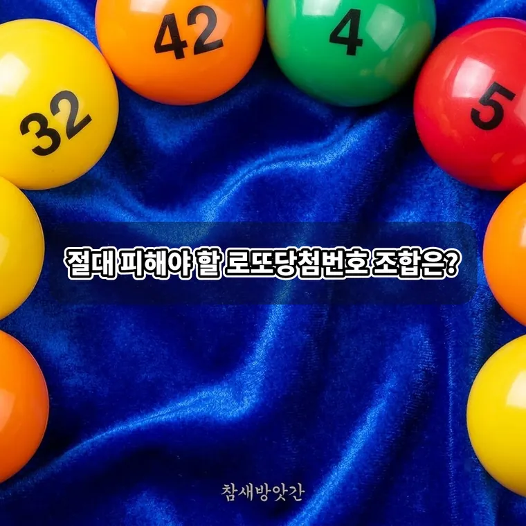

절대 피해야 할 로또 당첨 번호 조합과 비효율적인 선택 패턴
로또를 구매할 때 많은 사람이 자신만의 숫자나 특정 패턴을 활용해 번호를 선택합니다. 하지만 수학적 확률과 실제 당첨금 수령액 관점에서 볼 때 분명히 불리해지는 번호 선택 유형이 존재합니다.

모든 번호 조합이 출현할 확률은 동일하지만, 당첨되었을 때 수령할 금액과 당첨 가능성에 대한 오해를 줄이기 위해서는 피해야 할 선택 패턴을 정확히 이해하는 것이 중요합니다.
확률상 극단적으로 불리한 번호 조합 유형
로또 번호 추출 시스템은 완전한 무작위성을 바탕으로 작동합니다. 그러나 지나치게 편향된 번호 조합은 통계적 분포에서 벗어나거나 타인과 번호가 겹칠 확률을 극대로 높입니다.
연속된 6개 숫자 조합의 실상
1, 2, 3, 4, 5, 6과 같이 연속된 6개의 숫자를 선택하는 것은 이론상 다른 어떤 조합과도 동일한 출현 확률을 가집니다.
하지만 이러한 직관적인 연속 조합은 매주 수천 명 이상의 구매자가 동일하게 선택하는 대표적인 번호입니다. 만약 해당 조합이 당첨되더라도 당첨금이 수천 명에게 분할되어 실질적인 수령액이 매우 적어집니다.
동일한 일의 자리나 등차수열 패턴
5, 15, 25, 35, 45처럼 끝자리가 같거나 7, 14, 21, 28, 35처럼 일정하게 증가하는 등차수열 조합 역시 피하는 것이 좋습니다.
시각적으로 정돈된 패턴은 인지적 편향으로 인해 많은 구매자가 동일하게 마킹하는 경향이 있습니다. 당첨 확률 자체는 동일할지라도 독점적인 당첨금을 확보하기에는 가장 불리한 전략입니다.
당첨금 분할 위험을 높이는 마킹 패턴
로또 용지에 그리는 시각적 형태나 일상적인 날짜를 기준으로 번호를 고르는 방식은 타인과의 중복 가능성을 극대화합니다.
용지 위의 직선 및 도형 모양 마킹
로또 마킹 용지에서 가로 한 줄, 세로 한 줄, 또는 대각선이나 X자 형태로 번호를 선택하는 방식은 피해야 합니다.
많은 사람이 무심코 용지의 직관적인 모양을 따라 마킹하기 때문에, 이러한 패턴은 항상 중복 당첨자 수가 압도적으로 많이 발생합니다.
기념일과 생일 기반의 31 이하 숫자 조합
생년월일이나 기념일을 활용해 번호를 조합할 경우 선택할 수 있는 번호가 1부터 31까지로 제한됩니다.
32부터 45까지의 상위 번호가 제외되면 조합의 다양성이 떨어지며, 31 이하의 번호에 수많은 구매자가 몰려 당첨금 분할 위험이 커집니다.
로또 번호 선택 시 자주 하는 오해와 올바른 접근
번호를 고를 때 잘못된 통계적 직관에 의존하면 불필요한 고정관념에 갇히기 쉽습니다.
과거 당첨 번호와 미출현 번호에 대한 오해
가장 자주 나오는 번호라고 해서 다음 회차에 나올 확률이 높거나, 오랫동안 나오지 않은 번호라고 해서 나올 때가 된 것은 아닙니다.
각 회차의 추첨은 이전 회차와 완전히 독립된 확률적 사건이므로, 과거 기록에 과도하게 의미를 부여하는 분석 방식은 지양해야 합니다.
당첨금 독점을 고려한 번호 조합 전략
상금 수령액을 극대화하기 위해서는 타인이 잘 선택하지 않는 번호 조합을 구성하는 것이 유리합니다.
1부터 45까지의 숫자를 균형 있게 고르고, 특정 시각적 패턴이나 31 이하의 숫자 밀집을 피하는 것이 당첨 시 독점적인 상금을 확보하는 현실적인 방법입니다.
로또는 확률 게임이며 어떤 번호 선택도 당첨을 보장하지 않습니다.
자주 묻는 질문
이론적으로 모든 6개 번호 조합이 추첨될 확률은 약 814만 분의 1로 완전히 동일합니다. 따라서 과학적으로 절대 나오지 않는 번호 조합은 존재하지 않지만, 당첨자가 몰려 상금이 줄어드는 비효율적인 조합은 존재합니다.
생일이나 기념일을 이용해 번호를 조합하면 32에서 45 사이의 숫자가 배제됩니다. 이 경우 번호의 선택 폭이 좁아질 뿐만 아니라, 많은 사람이 비슷한 번호를 선택해 당첨 시 상금을 나눠 가져야 하는 인원수가 늘어납니다.
당첨 확률 자체는 자동과 수동 모두 동일합니다. 다만 수동 선택 시 특정 패턴이나 기하학적 모양으로 마킹하면 중복 당첨 위험이 커지므로, 패턴 없이 균형 있게 조합하거나 자동 번호를 활용하는 것이 상금 유지 측면에서 유리할 수 있습니다.
그렇지 않습니다. 각 회차의 추첨은 이전 회차와 완전히 독립된 확률적 사건이므로, 오랫동안 나오지 않았다고 해서 나올 때가 된 것은 아닙니다. 모든 조합의 확률은 약 814만 분의 1로 같습니다.